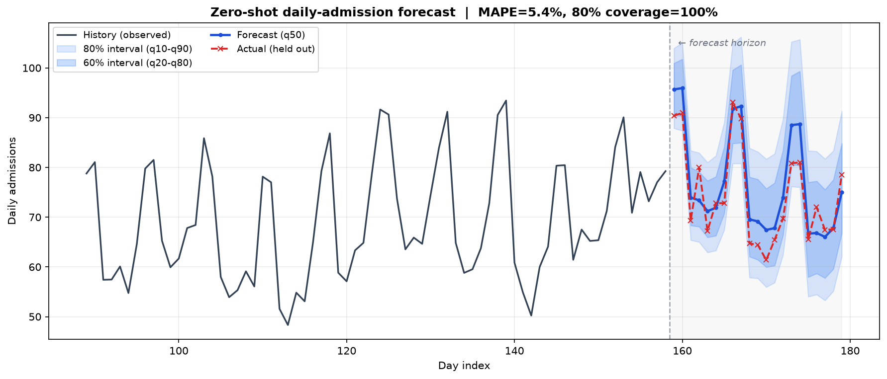
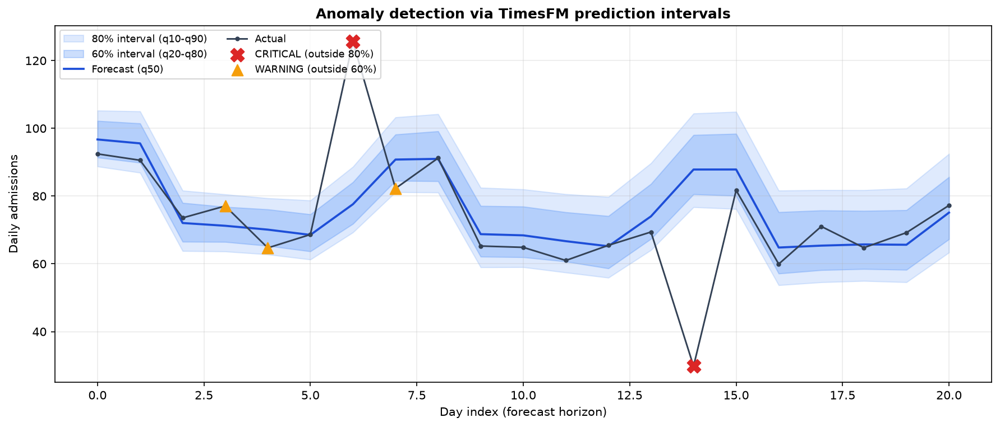
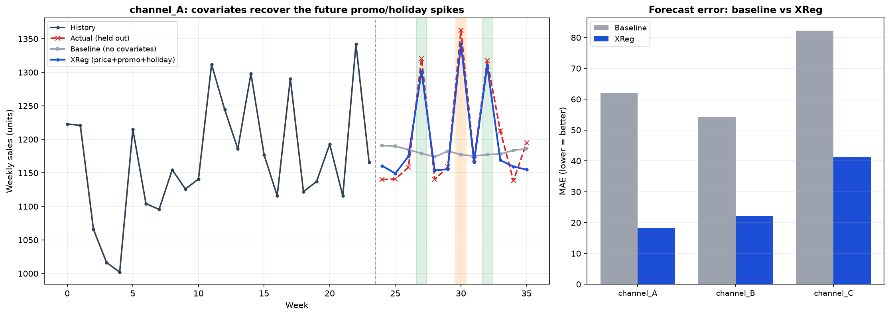

TimesFM：把时序预测变成一次推理
做招生、做投放、做运营的，几乎每天都在回答同一个问题：
下周这个渠道的量大概多少？会不会掉？掉了是正常波动还是出事了？
以前回答这个，得给每条序列单独配个模型：这个渠道用 ARIMA，那个指标套 Prophet，季节项、节假日再手动调一遍。渠道一多、指标一杂，光是维护这一堆各管一段的小模型就够喝一壶了。TimesFM 换了个思路：不再为每条序列训模型，而是拿一个在海量时间序列上预训练好的大模型，喂进一段历史，直接读出未来。跟 GPT 处理文本一个路子，只是它读的是数值。
这篇不推公式，就把 TimesFM 拿到运营场景里真跑一遍。先说清它凭什么能"零样本"预测、内部大概怎么转，再用三个场景把代码和图摆出来：渠道日招生量预测、招生量异常检测、带促销和价格协变量的销量预测。
文中数据都是模拟生成的，业务框架取自日常运营场景，数字跟真实经营指标无关。模型是 Google 开源的 TimesFM 2.5（200M），本地 CPU 就能跑。
一、什么是"时序基础模型"
传统预测模型基本是一序列一模型：它只见过你这一条数据，换个对象就得重新拟合、重新调参。TimesFM 反过来，它在大量跨领域的时间序列上预训练过——电力、金融、天气、零售、传感器都有——学的是"时间序列大致长什么样、会怎么走"这种通用规律。所以碰到一条没见过的新序列，它不用在你的数据上训练，推理时读一段历史上下文，就能给出预测和区间。这叫零样本（zero-shot）预测。
可以这么理解：传统模型像个只翻过技术手册的译者，手册翻得挺熟，换本小说就抓瞎；基础模型更像读过各种书的人，给他一段没读过的文字也能大致顺下去。差别就在要不要专门为你这份数据训练一遍。
体现在流程上，传统 ML 那套是 数据 → 划分 → 训练 → 验证，动辄小半天；TimesFM 是 数据 → 载入权重 → 预测，几秒钟的事。
TimesFM 出自 Google 的论文 A Decoder-Only Foundation Model for Time-Series Forecasting（ICML 2024），是个 decoder-only 的 Transformer，跟语言模型同一个家族，只是把"token"从词换成了一段段数值。
二、它内部大概怎么转
它能这么用，背后大概是三件事在起作用。
Patching：把数值切成块再喂进去。 一条几千上万点的序列，一个时间点当一个 token 的话，又长又碎。TimesFM 的做法是分块（patch）：连续 32 个点打包成一个输入 token，连续 128 个点作为一个输出 token。这样一条 2048 点的历史就变成约 64 个输入 token，生成时一次吐 128 个点。读得细、写得粗——读历史要看清纹理，往外生成时大步走更省算力。2.5 版把上下文窗口拉到了 16384。
Decoder-only + 因果注意力 + 自回归。 和 GPT 一样，它带因果掩码（只能看过去、看不到未来），一个 patch 一个 patch 地自回归生成：先根据历史生成第一个未来 patch，接上，再生成下一个。位置信息用旋转位置编码（RoPE），归一化用 RMSNorm，都是现在 Transformer 的标配，长序列外推更稳，这里不展开。
RevIN 实例归一化，零样本能跨量纲靠的就是它。 招生量是几十上百，GMV 是几十万，气温在 0 上下。一个模型怎么同时吃这些量级？靠的是进模型前先标准化、出来再还原：
$$ \tilde{x} = \frac{x - \mu}{\sigma} \quad\xrightarrow{\ \text{model}\ }\quad \hat{x} = \hat{\tilde{x}} \cdot \sigma + \mu $$
模型自始至终只看到均值 0、方差 1 的标准形态，预测完再乘回这条序列自己的 $\sigma$、加回 $\mu$。所以同一套权重，招生量能预测，GMV 也能，气温还行。对应到 API 就是 normalize_inputs=True 这个开关，多尺度的数据基本一直开着。
三、上手：三步就能预测
TimesFM 2.5 的接口挺简单，就三步：载入 → compile 配置 → forecast。
import torch
import timesfm
torch.set_float32_matmul_precision("high")
# 1) 载入预训练权重（首次会从 HuggingFace 下载 ~800MB）
model = timesfm.TimesFM_2p5_200M_torch.from_pretrained(
"google/timesfm-2.5-200m-pytorch", torch_compile=False,
)
# 2) 配置预测行为
model.compile(timesfm.ForecastConfig(
max_context=512, # 往回看多长
max_horizon=21, # 往前预测多长
normalize_inputs=True, # RevIN：跨量纲的开关
use_continuous_quantile_head=True, # 更好校准的分位数区间
fix_quantile_crossing=True, # 保证 q10<=q20<=...<=q90 单调不交叉
))
# 3) 零样本预测（inputs 是一批序列，可以一次喂多条）
point_forecast, quantile_forecast = model.forecast(horizon=21, inputs=[series])
# point_forecast: (N, 21) # 两个输出的结构见下文
# quantile_forecast: (N, 21, 10)
在往下看场景之前，先把输入和输出的数据结构理清楚，后面三个场景都是这一套。
输入 inputs 是一个列表，每个元素是一条序列（一维数组）。多条序列长度可以不一样，模型内部会自己截断/对齐，不用你手动补齐：
inputs = [ # 一个 list，装 N 条序列
np.array([12, 15, 13, ...]), # 序列①：比如 159 天历史，一维
np.array([88, 90, ...]), # 序列②：长度可以和①不同
] # 本文场景一只喂 1 条，即 N=1
输出是两个数组，形状里 N = 序列条数、H = 预测步数（horizon）：
point_forecast shape (N, H) 每条序列未来 H 步的点预测（= q50 中位数）
quantile_forecast shape (N, H, 10) 每条序列、每一步，给出 10 个分位数
# 场景一里 N=1、H=21，于是：
# point_forecast -> (1, 21)
# quantile_forecast -> (1, 21, 10)
quantile_forecast 最后那一维的 10 个数，含义按索引固定排布：
| 索引 | 0 | 1 | 2 | 3 | 4 | 5 | 6 | 7 | 8 | 9 |
|---|---|---|---|---|---|---|---|---|---|---|
| 含义 | mean | q10 | q20 | q30 | q40 | q50 | q60 | q70 | q80 | q90 |
注意 index 0 是均值 mean，不是 q10，分位数从 index 1 才开始，取的时候留意：
qf = quantile_forecast[0] # 取第 1 条序列 -> (21, 10)
# ❌ 错：lower = qf[:, 0] 这是 mean！
# ✅ 对：
q10, q50, q90 = qf[:, 1], qf[:, 5], qf[:, 9] # 10% / 50%(中位数) / 90%
q10~q90 围出的是 80% 预测区间，q20~q80 是 60% 区间，点预测 point_forecast 就等于 q50。
四、场景一：渠道日招生量的零样本预测
场景。 某体验课渠道的日招生量，带明显的周季节性（周末报名更旺）和缓慢的上升趋势。模拟 180 天，把最后 21 天藏起来当"标准答案"，让模型只看前面，去预测这 21 天。
import numpy as np
def make_admission_series(n_days=180, seed=42):
rng = np.random.default_rng(seed)
t = np.arange(n_days)
trend = 42 + 0.16 * t # 缓慢爬坡的大盘
dow = t % 7 # 0=周一 ... 6=周日
weekly = np.where(dow >= 5, 22, 0) + np.where(dow == 4, 8, 0) # 周末更旺
season = 6 * np.sin(2 * np.pi * t / 30) # 月度小波动
noise = rng.normal(0, 4, n_days)
return np.clip(trend + weekly + season + noise, 0, None).astype(np.float32)
HORIZON = 21
full = make_admission_series()
context, actual_future = full[:-HORIZON], full[-HORIZON:] # 藏起最后 21 天
point_forecast, quantile_forecast = model.forecast(horizon=HORIZON, inputs=[context])
结果如下。蓝线是点预测，深浅两条蓝带分别是 60% / 80% 区间，红色虚线是藏起来的真实值：

模型没在这条序列上训练、也没调过参，但周末抬头的节律基本复现出来了，MAPE 5.4%；藏起来的 21 天真实值全落在 80% 区间里（覆盖率 100%）。给一段历史，点预测和不确定区间就一起出来了。
对运营来说，那条蓝带有时比中间那根线更有用：它把正常波动的上下界圈了出来。
五、场景二：用预测区间做异常检测
既然模型已经给出了"正常情况下该落在哪个区间"，那实际值一旦跑出区间，就可以当异常信号看，不用再单独搞一个异常检测模型。规则也简单：
- 实际值落在 80% 区间（q10~q90）之外 →
CRITICAL - 落在 60% 区间（q20~q80）之外、但还在 80% 内 →
WARNING - 否则 →
NORMAL
在验证段人为注入两个异常：第 6 天一次大促尖峰（+70%），第 14 天一次投放系统故障塌陷（掉到 35%）。
actual[6] *= 1.7 # 大促尖峰
actual[14] *= 0.35 # 系统故障塌陷
qf = quantile_forecast[0]
q10, q20, q80, q90 = qf[:, 1], qf[:, 2], qf[:, 8], qf[:, 9]
severity = np.full(HORIZON, "NORMAL", dtype=object)
severity[(actual < q20) | (actual > q80)] = "WARNING" # 先标 60% 外
severity[(actual < q10) | (actual > q90)] = "CRITICAL" # 再覆盖 80% 外

两个注入的异常都被判成 CRITICAL（红叉）：第 6 天实际 125.6，正常区间上界才到 88.7；第 14 天实际 29.8，下界还在 76.7。几个贴着边界的小波动标成了 WARNING（橙三角）。相当于一次预测顺带干了监控告警的活——日常盯盘不用再给每个指标拍一个"跌 10% 就报警"的死阈值，区间会随历史波动性自己收放。
六、场景三：把已知的促销/节假日喂给模型（协变量 XReg）
前两个场景只用了历史序列本身。但运营里很多未来其实是提前知道的：下周三要大促、下个月有假期、这批课准备调价。这些已知的外部信息就是协变量（covariates），TimesFM 2.5 通过 XReg 支持（要 pip install timesfm[xreg]）。
协变量分动态、静态两类，都以「字典」传入——key 是协变量名，value 是"每条序列一个元素"的列表，按下标和 inputs 对齐。区别只在于那个元素是一整条数组还是一个标量：
| 参数 | 每条序列给什么 | 长度 | 例子 |
|---|---|---|---|
dynamic_numerical_covariates |
一条时间序列 | context + horizon |
价格 price |
dynamic_categorical_covariates |
一条时间序列 | context + horizon |
是否促销 / 节假日 |
static_numerical_covariates |
一个标量 | 1 | 基准客单价 |
static_categorical_covariates |
一个标量（int / 字符串） | 1 | 渠道类型 store_type |
动态协变量得覆盖 context + horizon——未来那段的值也要给全，模型正是靠"未来的促销安排"去修正预测的；静态协变量一条序列只给一个固定值。拿本场景的 3 个渠道（context=24 周、horizon=12 周）落到具体形状：
inputs = [ sales_A, sales_B, sales_C ] # 目标序列：每条长 24（各自历史）
dynamic_numerical_covariates = {
"price": [ price_A, price_B, price_C ], # 每条长 36 = 24 + 12
}
dynamic_categorical_covariates = {
"promotion": [ [0, 0, 1, 0, ...], ... ], # 每条长 36，值 0/1
"holiday": [ [0, 0, 0, 1, ...], ... ],
}
static_categorical_covariates = {
"store_type": [ "premium", "standard", "discount" ], # list 长 3，每条序列一个值
"region": [ "urban", "suburban", "rural" ],
}
inputs 和这几个 list 都靠下标一一对应（不是靠名字），顺序、长度（= 序列条数）必须一致。
有一点值得点破：这些协变量并不进 Transformer 主干，而是走一条线性回归旁路。类别值先做 one-hot，动态协变量按 context / horizon 切成两段，一起喂给一个 in-context 线性模型；Transformer 主干只吃目标序列，两路结果最后按 xreg_mode 合并。输出结构和 forecast() 一样是点预测 + 分位数，只是按序列组织成 list（xreg_pf[i] 就是第 i 条序列未来 H 步的预测）。
模拟 3 个渠道的周销量，在未来 horizon 段里放进两次促销、一次节假日。这些尖峰纯看历史猜不出来，但作为协变量喂进去就能补上：
# baseline：只喂历史，模型看不到未来的促销/节假日
# （开了 return_backcast 后 forecast() 输出含 backcast，未来段取最后 HORIZON 个）
base_raw, _ = model.forecast(horizon=HORIZON, inputs=list(context_inputs))
base_pf = np.asarray(base_raw)[:, -HORIZON:]
# XReg：把 price / promotion / holiday 作为协变量
xreg_pf, _ = model.forecast_with_covariates(
inputs=list(context_inputs),
dynamic_numerical_covariates={"price": [prices[s] for s in ids]},
dynamic_categorical_covariates={
"promotion": [promos[s].astype(int) for s in ids],
"holiday": [holidays[s].astype(int) for s in ids],
},
static_categorical_covariates={
"store_type": [stores[s]["type"] for s in ids],
"region": [stores[s]["region"] for s in ids],
},
xreg_mode="xreg + timesfm", # 默认：先 TimesFM 出基线，再用协变量拟合残差
)

左图里，灰线（无协变量的 baseline）在未来段只会顺着趋势平走，绿色促销周和橙色节假日周的尖峰全错过了；蓝线（XReg）吃到了"未来这几周有促销/节假日"的信息，就把尖峰顶了上去。右图的 MAE 对比也很清楚，三个渠道从 62 / 54 / 82 降到 18 / 22 / 41，大概降到原来的三分之一。
xreg_mode 有两种，分工不太一样：
"xreg + timesfm"（默认）：先让 TimesFM 出基线，再用协变量拟合残差。适合协变量解释的是偏离主趋势的那部分，比如促销、节假日这种脉冲。"timesfm + xreg"：先用协变量回归出主信号，再让 TimesFM 预测残差。适合协变量本身就是主要驱动力，比如气温对用电量。
七、几个容易踩的坑
- 分位数索引 off-by-one：
quantile_forecast[..., 0]是 mean 不是 q10，分位数从 index 1 起，别取错。 - 2.5 去掉了频率标志：老版本（1.0 / 2.0）要传
freq=[0]之类，2.5 不需要了，接口清爽不少。 - 动态协变量长度 = context + horizon：未来段的值也要给全，否则报错。
normalize_inputs=True基本一直开：多尺度数据不开 RevIN，效果会明显变差。- XReg 要先开
return_backcast=True，开完forecast()输出会带 backcast，取未来段记得切最后horizon个点——我在场景三就为这个形状栽过一次。
参考：A Decoder-Only Foundation Model for Time-Series Forecasting (ICML 2024)；Google Research Blog；TimesFM on HuggingFace。文中三张图都是本地跑 TimesFM 2.5（200M, PyTorch）在模拟数据上生成的。